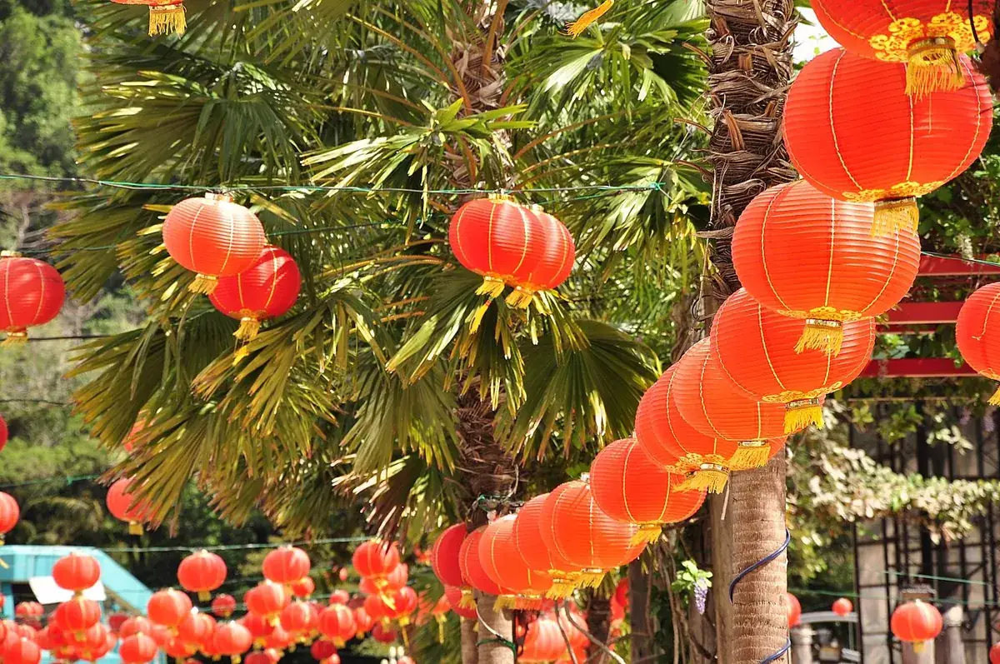
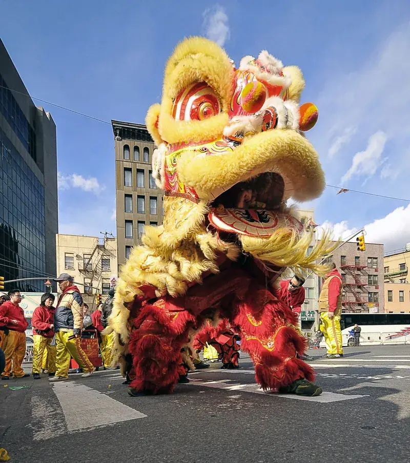
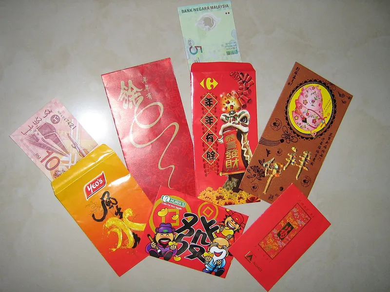
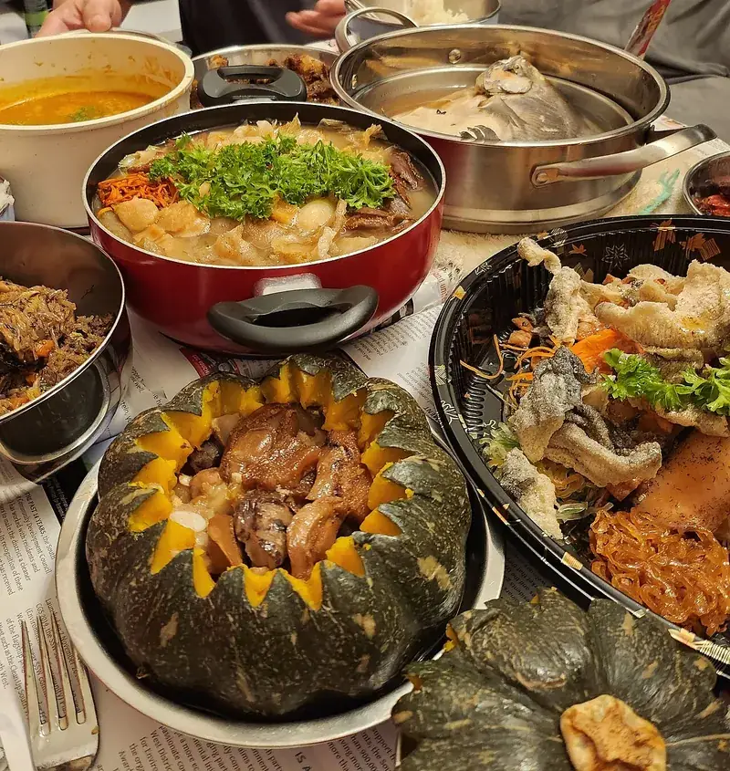
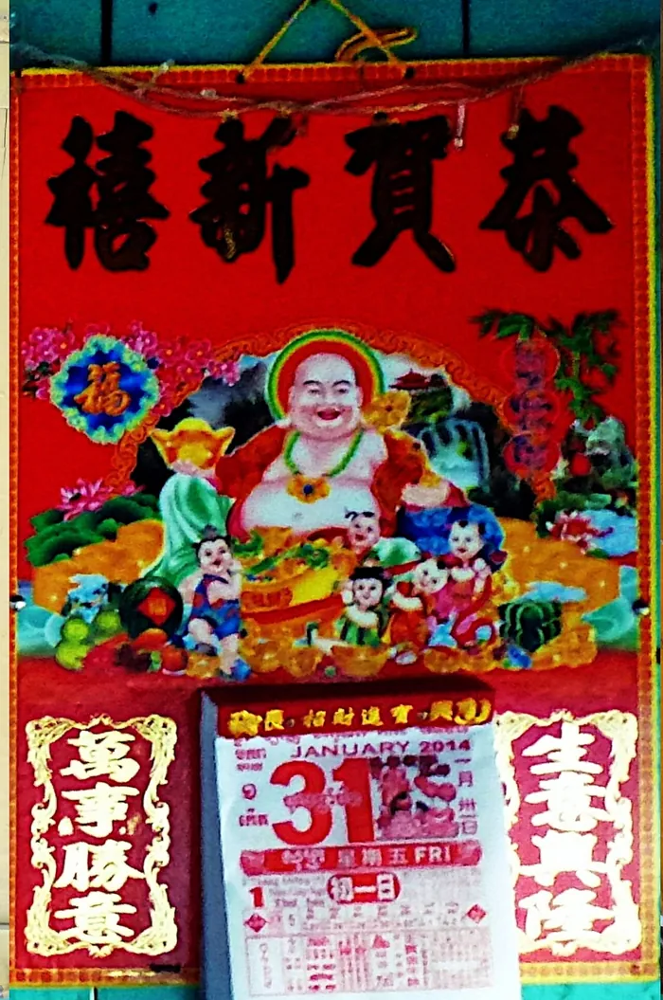

Festival Guide
Lunar New Year and Chinese New Year: Meaning, Traditions and Dates to 2036
Chinese New Year, also called Lunar New Year or the Spring Festival, is celebrated by Chinese families around the world, and widely in Cambodia too. Here is what it is, how its date is set, the main traditions, and every date and zodiac animal from 2027 to 2036.

Chinese New Year or Lunar New Year?
Both names describe the same festival. In China it is commonly known as the Spring Festival, and in English it is also called Lunar New Year, Wikipedia explains. Strictly speaking, the traditional Chinese calendar is lunisolar, following both the moon and the sun, rather than purely lunar.
“Lunar New Year” is also used more widely, for the new year in several Asian calendars. Vietnam's Tết and Korea's Seollal generally fall on the same day as Chinese New Year, while Tibetan Losar and Mongolian Tsagaan Sar can fall on the same day or about a month later, according to Wikipedia.
Cambodia is different. Khmer New Year, like the new years of Laos, Thailand, Myanmar and Sri Lanka, follows the Buddhist calendar and falls in mid-April, which is also when the Khmer zodiac animal changes. Our Khmer New Year guide explains how the two calendars line up.
How the date is set
Chinese New Year does not have a fixed date in the international calendar. It begins on the new moon that falls between 21 January and 20 February, as Wikipedia puts it, which is why its date changes from one year to the next.
The new year also starts a new animal in the Chinese zodiac. Anyone born in January or early February before that day belongs to the previous year's animal; our guide to being born in January explains how to check, or use the zodiac checker.
Chinese New Year dates and animals, 2027 to 2036
These dates come from the lunar calendar table our zodiac checker uses. Governments publish their official public holidays for each year separately.
| Year | Chinese New Year | Zodiac animal |
|---|---|---|
| 2027 | Saturday 6 February 2027 | Fire Goat |
| 2028 | Wednesday 26 January 2028 | Earth Monkey |
| 2029 | Tuesday 13 February 2029 | Earth Rooster |
| 2030 | Sunday 3 February 2030 | Metal Dog |
| 2031 | Thursday 23 January 2031 | Metal Pig |
| 2032 | Wednesday 11 February 2032 | Water Rat |
| 2033 | Monday 31 January 2033 | Water Ox |
| 2034 | Sunday 19 February 2034 | Wood Tiger |
| 2035 | Thursday 8 February 2035 | Wood Rabbit |
| 2036 | Monday 28 January 2036 | Fire Dragon |
For 2027 in detail, see Chinese New Year 2027: the Year of the Goat and why the Goat is also called the Sheep or Ram.
The main traditions
Customs vary from family to family and country to country, but Wikipedia describes these as the most widespread:
- Cleaning the house before the new year, to sweep away any ill fortune.
- Red decorations: red paper-cuts and couplets on windows and doors.
- The reunion dinner on New Year's Eve, when the family gathers for a meal together.
- Red envelopes of money, called hongbao in Mandarin, given out during the celebrations.
- Firecrackers, traditionally lit to ward off evil spirits.
- Fifteen days of celebration, from New Year's Eve to the Lantern Festival on the 15th day of the year.
Behind the red and the noise is an old story. In the legend of the Nian, a beast came to eat villagers, especially children, in the middle of the night, until the villagers learned that it was afraid of the colour red and of loud noises.
In 2024, Chinese New Year was added to UNESCO's list of the Intangible Cultural Heritage of Humanity, Wikipedia notes.



Chinese New Year in Cambodia
Chinese New Year is not a public holiday in Cambodia, but it is widely celebrated, and some schools, private companies and institutions close for it, Xinhua reported in 2023. A university vice-president it quoted, Sambo Manara, estimated that about 80 percent of Cambodians in urban areas and 40 percent in rural areas celebrate it.
Families of Chinese descent clean their homes and decorate them with red paper-cuts, flowers, red lanterns and couplets, honour their ancestors and gather for family reunions, the same report said. A history professor, Diep Sophal, noted that Cambodia in fact marks three new years: the international New Year, Chinese New Year and Khmer New Year.
In February 2026, on the eve of the Year of the Horse, Prime Minister Hun Manet sent his best wishes to Chinese people and Cambodians of Chinese descent, and folk artists performed a lion dance at the Royal Palace in Phnom Penh, The Star reported.

Where it is a public holiday
Outside mainland China, where it is the start of a longer holiday week, Chinese New Year is an official holiday in several places, according to Wikipedia's overview:
- Hong Kong and Macau: three days each.
- Taiwan: several days, with extra bridge holidays.
- Southeast Asia: Malaysia, Singapore, Brunei, Indonesia, the Philippines and Myanmar; in Thailand it is a public holiday only in some southern provinces.
- Korea and Vietnam: the same days are public holidays as Seollal and Tết.
- Elsewhere: one day in New York and California in the United States, and in Suriname.
Frequently asked questions
When is Chinese New Year 2027?
Saturday 6 February 2027. It starts the Year of the Goat, a Fire Goat year.
Is Lunar New Year the same as Chinese New Year?
Yes, for the Chinese festival: Lunar New Year is its common English name, and in China it is called the Spring Festival. Lunar New Year is also used for related new years such as Vietnam's Tết and Korea's Seollal, which usually fall on the same day.
Why does Chinese New Year change date every year?
It follows the moon: it begins on the new moon that falls between 21 January and 20 February, so its date in the international calendar moves each year.
How long does Chinese New Year last?
The celebrations run for 15 days, from New Year's Eve to the Lantern Festival on the 15th day of the new year.
Is Chinese New Year a public holiday in Cambodia?
No, but it is widely celebrated, especially by families of Chinese descent, and some schools, companies and institutions close for it. Cambodia's own new year, Khmer New Year, is in mid-April.
Sources and further reading
- Wikipedia: “Chinese New Year” — the names Spring Festival and Lunar New Year, the date rule, the 15 days to the Lantern Festival, the traditions, the Nian legend, the 2024 UNESCO listing and the public holidays.
- Wikipedia: “Lunar New Year” — Tết, Seollal, Losar and Tsagaan Sar, and the mid-April new years of Cambodia and its neighbours.
- Cambodianess (Xinhua): “Chinese Lunar New Year widely celebrated in Cambodia” (20 January 2023) — Chinese New Year in Cambodia, the estimates by Sambo Manara and the three new years noted by Diep Sophal.
- The Star: “Cambodian PM sends Lunar New Year greetings” (16 February 2026) — Hun Manet's greetings and the lion dance at the Royal Palace.
- Hong Kong Observatory: Gregorian-Lunar Calendar Conversion Table of 2027 — 6 February 2027 as the first day of the lunar year.
Dates follow the Lunar New Year table used by our zodiac checker; official holidays are announced by each government. Photos are from Wikimedia Commons under the free licences named under each picture.
Explore more: Chinese New Year 2027 · Goat, Sheep or Ram? · Khmer New Year and the animal year · Born in January?
← Back to the MyBirthSign Blogមគ្គុទ្ទេសក៍ពិធីបុណ្យ
ចូលឆ្នាំចិន (Lunar New Year)៖ អត្ថន័យ ប្រពៃណី និងកាលបរិច្ឆេទ ដល់ឆ្នាំ 2036
បុណ្យចូលឆ្នាំចិន ដែលភាសាអង់គ្លេសហៅថា Lunar New Year ឬ Spring Festival ត្រូវបានប្រារព្ធដោយគ្រួសារចិននៅទូទាំងពិភពលោក ហើយក៏ត្រូវបានប្រារព្ធយ៉ាងទូលំទូលាយនៅកម្ពុជាផងដែរ។ ខាងក្រោមនេះជាអត្ថន័យរបស់វា របៀបកំណត់ថ្ងៃ ប្រពៃណីសំខាន់ៗ និងកាលបរិច្ឆេទ ព្រមទាំងសត្វរាសីនីមួយៗ ពីឆ្នាំ 2027 ដល់ 2036។
ចូលឆ្នាំចិន ឬ Lunar New Year?
ឈ្មោះទាំងពីរ សំដៅលើពិធីបុណ្យតែមួយ។ យោងតាម Wikipedia នៅប្រទេសចិន គេហៅបុណ្យនេះជាទូទៅថា បុណ្យនិទាឃរដូវ (Spring Festival) ហើយជាភាសាអង់គ្លេស គេក៏ហៅវាថា Lunar New Year ផងដែរ។ តាមពិត ប្រតិទិនចិនបុរាណជាប្រតិទិនចន្ទសុរិយគតិ គឺផ្អែកលើទាំងព្រះចន្ទ និងព្រះអាទិត្យ មិនមែនផ្អែកលើព្រះចន្ទតែមួយមុខនោះទេ។
ពាក្យ Lunar New Year ក៏ត្រូវបានប្រើសម្រាប់ចូលឆ្នាំ ក្នុងប្រតិទិនអាស៊ីផ្សេងទៀតដែរ។ តាម Wikipedia បុណ្យ Tết របស់វៀតណាម និង Seollal របស់កូរ៉េ ជាទូទៅធ្លាក់ចំថ្ងៃតែមួយនឹងចូលឆ្នាំចិន ចំណែក Losar របស់ទីបេ និង Tsagaan Sar របស់ម៉ុងហ្គោលី អាចធ្លាក់ចំថ្ងៃតែមួយ ឬប្រហែលមួយខែក្រោយ។
កម្ពុជាខុសពីនេះ។ ចូលឆ្នាំខ្មែរ ដូចជាចូលឆ្នាំរបស់ឡាវ ថៃ មីយ៉ាន់ម៉ា និងស្រីលង្កាដែរ ផ្អែកលើប្រតិទិនព្រះពុទ្ធសាសនា ហើយធ្លាក់នៅកណ្ដាលខែមេសា ដែលជាពេលដែលសត្វរាសីខ្មែរប្ដូរផងដែរ។ មគ្គុទ្ទេសក៍ចូលឆ្នាំខ្មែររបស់យើង ពន្យល់ពីរបៀបដែលប្រតិទិនទាំងពីរត្រូវគ្នា។
របៀបកំណត់ថ្ងៃចូលឆ្នាំ
ចូលឆ្នាំចិន មិនមានថ្ងៃថេរក្នុងប្រតិទិនអន្តរជាតិទេ។ យោងតាម Wikipedia វាចាប់ផ្ដើមនៅថ្ងៃព្រះចន្ទថ្មី (new moon) ដែលធ្លាក់នៅចន្លោះ ថ្ងៃទី 21 ខែមករា ដល់ថ្ងៃទី 20 ខែកុម្ភៈ ហេតុនេះហើយបានជាថ្ងៃចូលឆ្នាំផ្លាស់ប្ដូររៀងរាល់ឆ្នាំ។
ថ្ងៃចូលឆ្នាំចិន ក៏ជាថ្ងៃចាប់ផ្ដើមសត្វរាសីថ្មីក្នុងរាសីចិនដែរ។ អ្នកដែលកើតក្នុងខែមករា ឬដើមខែកុម្ភៈ មុនថ្ងៃនោះ នៅតែជាសត្វរាសីនៃឆ្នាំមុន។ មគ្គុទ្ទេសក៍របស់យើងអំពីអ្នកកើតក្នុងខែមករា ពន្យល់ពីរបៀបពិនិត្យ ឬសូមប្រើ កម្មវិធីពិនិត្យរាសី។
ថ្ងៃចូលឆ្នាំចិន និងសត្វរាសី ពីឆ្នាំ 2027 ដល់ 2036
កាលបរិច្ឆេទខាងក្រោម យកចេញពីតារាងប្រតិទិនចន្ទគតិ ដែលកម្មវិធីពិនិត្យរាសីរបស់យើងប្រើ។ រដ្ឋាភិបាលនីមួយៗ ប្រកាសថ្ងៃឈប់សម្រាកផ្លូវការរបស់ខ្លួនដាច់ដោយឡែករៀងរាល់ឆ្នាំ។
| ឆ្នាំ | ថ្ងៃចូលឆ្នាំចិន | សត្វរាសី |
|---|---|---|
| 2027 | ថ្ងៃសៅរ៍ 06/02/2027 | មមែ ធាតុភ្លើង |
| 2028 | ថ្ងៃពុធ 26/01/2028 | វក ធាតុដី |
| 2029 | ថ្ងៃអង្គារ 13/02/2029 | រកា ធាតុដី |
| 2030 | ថ្ងៃអាទិត្យ 03/02/2030 | ច ធាតុលោហធាតុ |
| 2031 | ថ្ងៃព្រហស្បតិ៍ 23/01/2031 | កុរ ធាតុលោហធាតុ |
| 2032 | ថ្ងៃពុធ 11/02/2032 | ជូត ធាតុទឹក |
| 2033 | ថ្ងៃច័ន្ទ 31/01/2033 | ឆ្លូវ ធាតុទឹក |
| 2034 | ថ្ងៃអាទិត្យ 19/02/2034 | ខាល ធាតុឈើ |
| 2035 | ថ្ងៃព្រហស្បតិ៍ 08/02/2035 | ថោះ ធាតុឈើ |
| 2036 | ថ្ងៃច័ន្ទ 28/01/2036 | រោង ធាតុភ្លើង |
សម្រាប់ឆ្នាំ 2027 លម្អិត សូមអាន ចូលឆ្នាំចិន 2027៖ ឆ្នាំមមែ និងហេតុអ្វីបានជាមមែ ក៏ត្រូវបានគេហៅថាចៀម ឬចៀមឈ្មោល។
ប្រពៃណីសំខាន់ៗ
ទំនៀមទម្លាប់អាចខុសគ្នាពីគ្រួសារមួយទៅគ្រួសារមួយ និងពីប្រទេសមួយទៅប្រទេសមួយ ប៉ុន្តែ Wikipedia ពិពណ៌នាអំពីប្រពៃណីទាំងនេះ ថាជាប្រពៃណីដែលពេញនិយមជាងគេ៖
- បោសសម្អាតផ្ទះ មុនចូលឆ្នាំ ដើម្បីបោសចោលសំណាងអាក្រក់។
- ការតុបតែងពណ៌ក្រហម៖ ក្រដាសក្រហមកាត់ជាលំនាំ និងឃ្លាពរជ័យជាគូ បិទលើបង្អួច និងទ្វារ។
- អាហារជុំគ្រួសារ នៅយប់ចូលឆ្នាំ ដែលសមាជិកគ្រួសារមកជួបជុំគ្នាហូបបាយ។
- អាំងប៉ាវ ឬស្រោមសំបុត្រក្រហមដាក់ប្រាក់ (ភាសាចិនកុកងឺហៅថា hongbao) ដែលគេចែកជូនគ្នាពេលបុណ្យ។
- ផាវ ដែលតាមប្រពៃណី គេបាញ់ដើម្បីបណ្ដេញវិញ្ញាណអាក្រក់។
- បុណ្យរយៈពេល 15 ថ្ងៃ ចាប់ពីយប់ចូលឆ្នាំ ដល់បុណ្យគោម (Lantern Festival) នៅថ្ងៃទី 15 នៃឆ្នាំថ្មី។
នៅពីក្រោយពណ៌ក្រហម និងសំឡេងអ៊ូអរ គឺជារឿងព្រេងមួយ។ តាមរឿងព្រេង សត្វនៀន (Nian) ជាសត្វសាហាវមួយ ដែលតែងមកស៊ីអ្នកភូមិ ជាពិសេសក្មេងៗ នៅពាក់កណ្ដាលអធ្រាត្រ រហូតដល់អ្នកភូមិដឹងថា វាខ្លាចពណ៌ក្រហម និងសំឡេងខ្លាំងៗ។
យោងតាម Wikipedia នៅឆ្នាំ 2024 បុណ្យចូលឆ្នាំចិន ត្រូវបានបញ្ចូលក្នុងបញ្ជីបេតិកភណ្ឌវប្បធម៌អរូបីនៃមនុស្សជាតិ របស់អង្គការយូណេស្កូ។
ចូលឆ្នាំចិននៅកម្ពុជា
ចូលឆ្នាំចិន មិនមែនជាថ្ងៃឈប់សម្រាកសាធារណៈនៅកម្ពុជាទេ ប៉ុន្តែត្រូវបានប្រារព្ធយ៉ាងទូលំទូលាយ ហើយសាលារៀន ក្រុមហ៊ុនឯកជន និងស្ថាប័នមួយចំនួន បិទទ្វារសម្រាប់បុណ្យនេះ នេះបើតាមរបាយការណ៍របស់ទីភ្នាក់ងារព័ត៌មានស៊ិនហួ ឆ្នាំ 2023។ លោក Sambo Manara អនុប្រធានសាកលវិទ្យាល័យមួយ ដែលរបាយការណ៍នោះដកស្រង់សម្ដី បានប៉ាន់ប្រមាណថា ប្រហែល 80 ភាគរយនៃប្រជាជនកម្ពុជានៅទីក្រុង និង 40 ភាគរយនៅជនបទ ប្រារព្ធបុណ្យនេះ។
គ្រួសារដែលមានដើមកំណើតចិន បោសសម្អាត និងតុបតែងផ្ទះ ដោយក្រដាសក្រហមកាត់ជាលំនាំ ផ្កា គោមក្រហម និងឃ្លាពរជ័យជាគូ ព្រមទាំងគោរពបូជាដូនតា និងជួបជុំគ្រួសារ នេះបើតាមរបាយការណ៍ដដែល។ សាស្ត្រាចារ្យប្រវត្តិវិទ្យា លោក Diep Sophal កត់សម្គាល់ថា តាមពិតកម្ពុជាប្រារព្ធចូលឆ្នាំបី៖ ចូលឆ្នាំសកល ចូលឆ្នាំចិន និងចូលឆ្នាំខ្មែរ។
នៅខែកុម្ភៈ ឆ្នាំ 2026 មុនថ្ងៃចូលឆ្នាំមមី សម្ដេចមហាបវរធិបតី ហ៊ុន ម៉ាណែត នាយករដ្ឋមន្ត្រី បានផ្ញើសារជូនពរដល់ប្រជាជនចិន និងប្រជាជនកម្ពុជាដែលមានដើមកំណើតចិន ហើយសិល្បករប្រជាប្រិយបានសម្ដែងរបាំតោនៅព្រះបរមរាជវាំង ក្នុងរាជធានីភ្នំពេញ នេះបើតាមកាសែត The Star។
ប្រទេសដែលចាត់ទុកជាថ្ងៃឈប់សម្រាក
ក្រៅពីប្រទេសចិន ដែលបុណ្យនេះជាការចាប់ផ្ដើមនៃសប្ដាហ៍ឈប់សម្រាកវែង ចូលឆ្នាំចិនជាថ្ងៃឈប់សម្រាកផ្លូវការនៅកន្លែងជាច្រើន យោងតាមទិដ្ឋភាពទូទៅរបស់ Wikipedia៖
- ហុងកុង និងម៉ាកាវ៖ 3 ថ្ងៃ។
- តៃវ៉ាន់៖ ច្រើនថ្ងៃ ព្រមទាំងថ្ងៃឈប់បន្ថែម។
- អាស៊ីអាគ្នេយ៍៖ ម៉ាឡេស៊ី សិង្ហបុរី ប្រ៊ុយណេ ឥណ្ឌូនេស៊ី ហ្វីលីពីន និងមីយ៉ាន់ម៉ា។ នៅប្រទេសថៃ ជាថ្ងៃឈប់សម្រាកតែនៅខេត្តមួយចំនួនភាគខាងត្បូងប៉ុណ្ណោះ។
- កូរ៉េ និងវៀតណាម៖ ថ្ងៃដដែលនេះជាថ្ងៃឈប់សម្រាក ក្រោមឈ្មោះ Seollal និង Tết។
- កន្លែងផ្សេងទៀត៖ មួយថ្ងៃ នៅរដ្ឋញូវយ៉ក និងរដ្ឋកាលីហ្វ័រញ៉ា សហរដ្ឋអាមេរិក និងនៅប្រទេសសូរីណាម។
សំណួរដែលគេសួរញឹកញាប់
ចូលឆ្នាំចិនឆ្នាំ 2027 ធ្លាក់ចំថ្ងៃណា?
ថ្ងៃសៅរ៍ 06/02/2027។ ជាថ្ងៃចាប់ផ្ដើមឆ្នាំមមែ ធាតុភ្លើង។
Lunar New Year និងចូលឆ្នាំចិន ដូចគ្នាឬទេ?
ដូចគ្នា សម្រាប់បុណ្យរបស់ចិន៖ Lunar New Year ជាឈ្មោះអង់គ្លេសទូទៅរបស់វា ហើយនៅប្រទេសចិន គេហៅថាបុណ្យនិទាឃរដូវ។ ពាក្យ Lunar New Year ក៏ត្រូវបានប្រើសម្រាប់ចូលឆ្នាំដែលពាក់ព័ន្ធ ដូចជា Tết របស់វៀតណាម និង Seollal របស់កូរ៉េ ដែលជាធម្មតាធ្លាក់ចំថ្ងៃតែមួយ។
ហេតុអ្វីថ្ងៃចូលឆ្នាំចិនផ្លាស់ប្ដូររៀងរាល់ឆ្នាំ?
ព្រោះវាអនុវត្តតាមព្រះចន្ទ៖ វាចាប់ផ្ដើមនៅថ្ងៃព្រះចន្ទថ្មី ដែលធ្លាក់នៅចន្លោះថ្ងៃទី 21 មករា ដល់ថ្ងៃទី 20 កុម្ភៈ ដូច្នេះថ្ងៃក្នុងប្រតិទិនអន្តរជាតិផ្លាស់ប្ដូររៀងរាល់ឆ្នាំ។
ចូលឆ្នាំចិនប្រារព្ធរយៈពេលប៉ុន្មានថ្ងៃ?
15 ថ្ងៃ ចាប់ពីយប់ចូលឆ្នាំ ដល់បុណ្យគោមនៅថ្ងៃទី 15 នៃឆ្នាំថ្មី។
តើចូលឆ្នាំចិនជាថ្ងៃឈប់សម្រាកសាធារណៈនៅកម្ពុជាឬទេ?
ទេ ប៉ុន្តែត្រូវបានប្រារព្ធយ៉ាងទូលំទូលាយ ជាពិសេសដោយគ្រួសារដែលមានដើមកំណើតចិន ហើយសាលារៀន ក្រុមហ៊ុន និងស្ថាប័នមួយចំនួនបិទទ្វារ។ ចូលឆ្នាំខ្មែរ គឺនៅកណ្ដាលខែមេសា។
ប្រភព និងឯកសារអានបន្ថែម
- Wikipedia: “Chinese New Year” — ឈ្មោះបុណ្យនិទាឃរដូវ និង Lunar New Year ច្បាប់កំណត់ថ្ងៃ បុណ្យ 15 ថ្ងៃដល់បុណ្យគោម ប្រពៃណីនានា រឿងព្រេងសត្វនៀន បញ្ជីយូណេស្កូឆ្នាំ 2024 និងថ្ងៃឈប់សម្រាក។
- Wikipedia: “Lunar New Year” — បុណ្យ Tết, Seollal, Losar និង Tsagaan Sar ព្រមទាំងចូលឆ្នាំកណ្ដាលខែមេសា របស់កម្ពុជា និងប្រទេសជិតខាង។
- Cambodianess (Xinhua): “Chinese Lunar New Year widely celebrated in Cambodia” (20 January 2023) — ចូលឆ្នាំចិននៅកម្ពុជា ការប៉ាន់ប្រមាណរបស់លោក Sambo Manara និងចូលឆ្នាំទាំងបី ដែលលោក Diep Sophal កត់សម្គាល់។
- The Star: “Cambodian PM sends Lunar New Year greetings” (16 February 2026) — សារជូនពររបស់សម្ដេចមហាបវរធិបតី ហ៊ុន ម៉ាណែត និងរបាំតោនៅព្រះបរមរាជវាំង។
- Hong Kong Observatory: Gregorian-Lunar Calendar Conversion Table of 2027 — ថ្ងៃទី 06/02/2027 ជាថ្ងៃដំបូងនៃឆ្នាំចន្ទគតិ។
កាលបរិច្ឆេទ អនុវត្តតាមតារាងចូលឆ្នាំចន្ទគតិ ដែលកម្មវិធីពិនិត្យរាសីរបស់យើងប្រើ។ ថ្ងៃឈប់សម្រាកផ្លូវការ ត្រូវបានប្រកាសដោយរដ្ឋាភិបាលនីមួយៗ។ រូបថតមកពី Wikimedia Commons ក្រោមអាជ្ញាប័ណ្ណសេរី ដែលបានបញ្ជាក់នៅក្រោមរូបនីមួយៗ។
អានបន្ថែម៖ ចូលឆ្នាំខ្មែរ និងឆ្នាំសត្វ · ថ្ងៃឈប់សម្រាកសាធារណៈ · ឆ្នាំមមែ · ពិនិត្យរាសីរបស់អ្នក
← ត្រឡប់ទៅប្លុក MyBirthSign